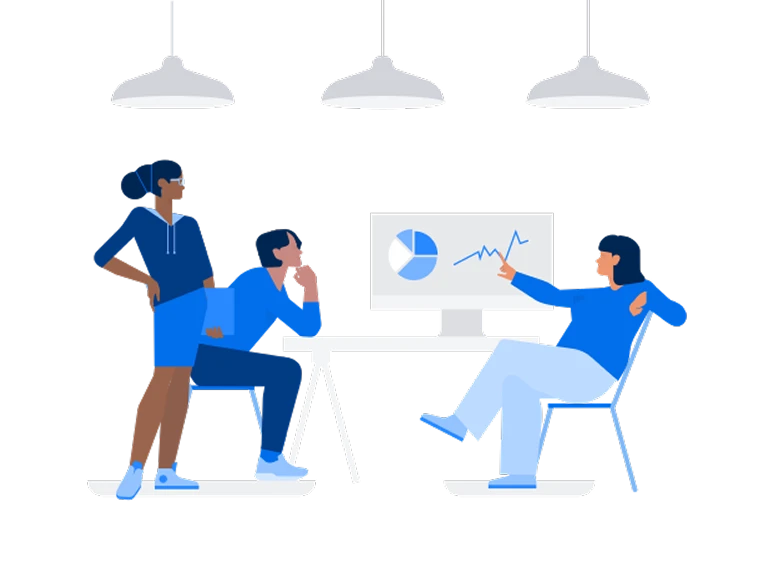
Edily is a video-based learning platform targeting Gen-Z students. The content was solid — but users weren't coming back. Retention was dropping, and the team knew the product needed a way to build habit.
There were three main objectives we wanted to achieve:
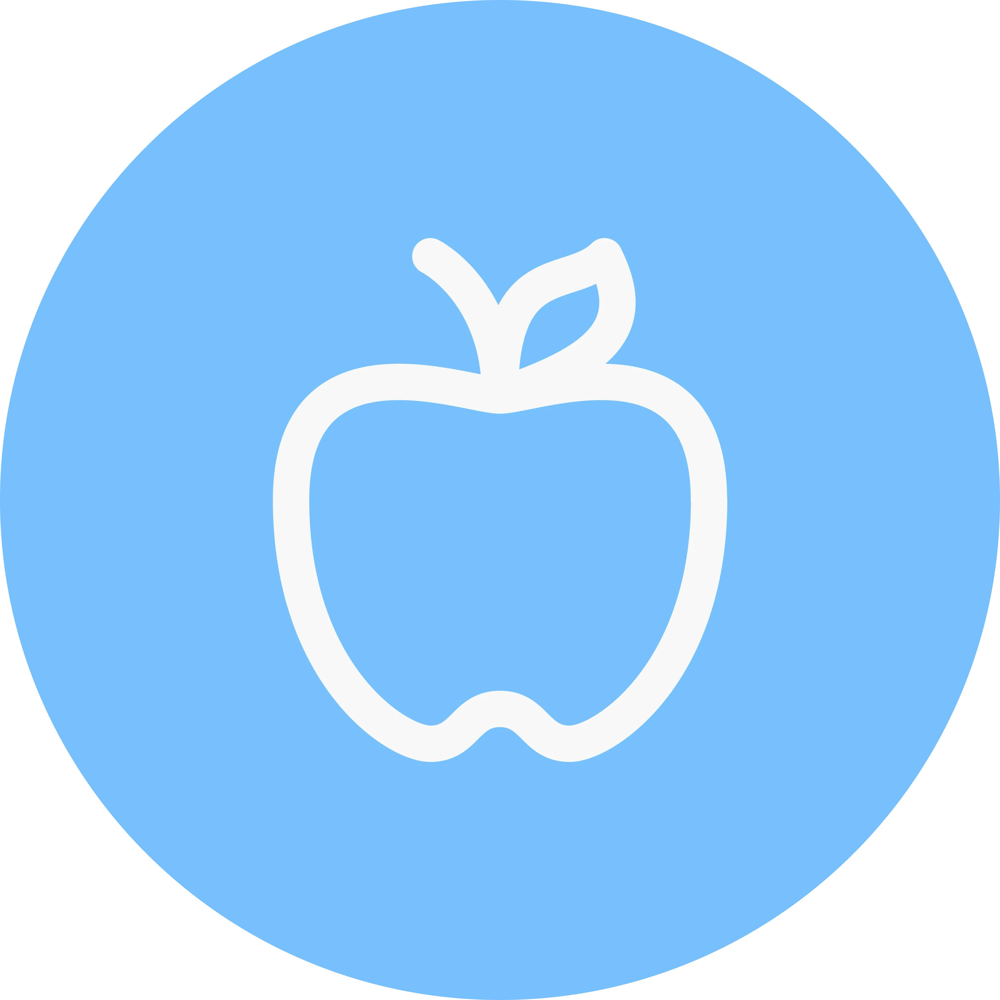
Integration
Introduce gamification features without disrupting the core infrastructure.
Retention
Create incentive system facilitating learning and maintaining long-term retention.
Progression
Motivate users with a sense of progression and satisfaction.
Yu-Kai Chou's Octalysis framework maps gamification across 8 human drives. For a learning context, I filtered to drives that are intrinsic and positive — mechanics that motivate through reward rather than coercion.
STEP 1 - FILTERING THE FRAMEWORK
8 drives evaluated - 3 prioritized for a learning context
STEP 2 - MAPPING COMPETITORS
Only EdTech app hitting all 3 priority drives with a real habit loop
FEATURES TO INVESTIGATE IN SURVEY
Users need to see growth, not just feel it
5 of 6 appsMilestone rewards build identity
5 of 6 appsSimplest habit loop — hard to break
4 of 6 appsOnly mechanic serving both learning and engagement
4 of 6 appsTwo surveys . One on general gamification habits, one on long-term Duolingo users specifically.
SURVEY 1 - GENERAL GAMIFICATION - 47 RESPONSES
People don't want to feel like they're grinding. They want to see they're moving.
Not leaderboards. Not social. Just visible proof that something is happening — and tasks that make users feel like they actually learned something.
SURVEY 2 - DUOLINGO USERS - LONG TERM RETENTION
of long-term Duolingo users open the app every single day.
That's not engagement — that's a habit. And it's not driven by leaderboards. It's streaks, visible progress, and the satisfaction of getting something right.
WHAT THIS MEANS FOR DESIGN
The research told us what to build and what to avoid. Streaks, progress bars, practice questions — yes. Mechanics that make users feel trapped — never.
Visible stats before social or competitive features
Where learning and gamification meet
Every element feels like a reward, not a trap
I ran a How Might We exercise to reframe the research into design opportunities. Five clusters surfaced: user confidence, engagement frequency, feature discoverability, learning motivation, and technical feasibility.
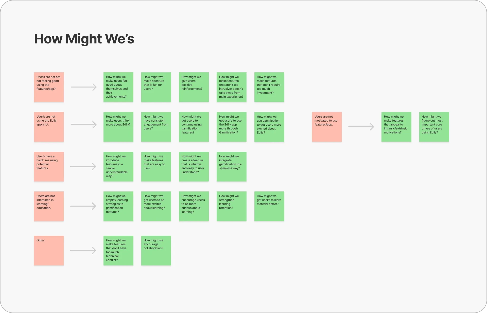
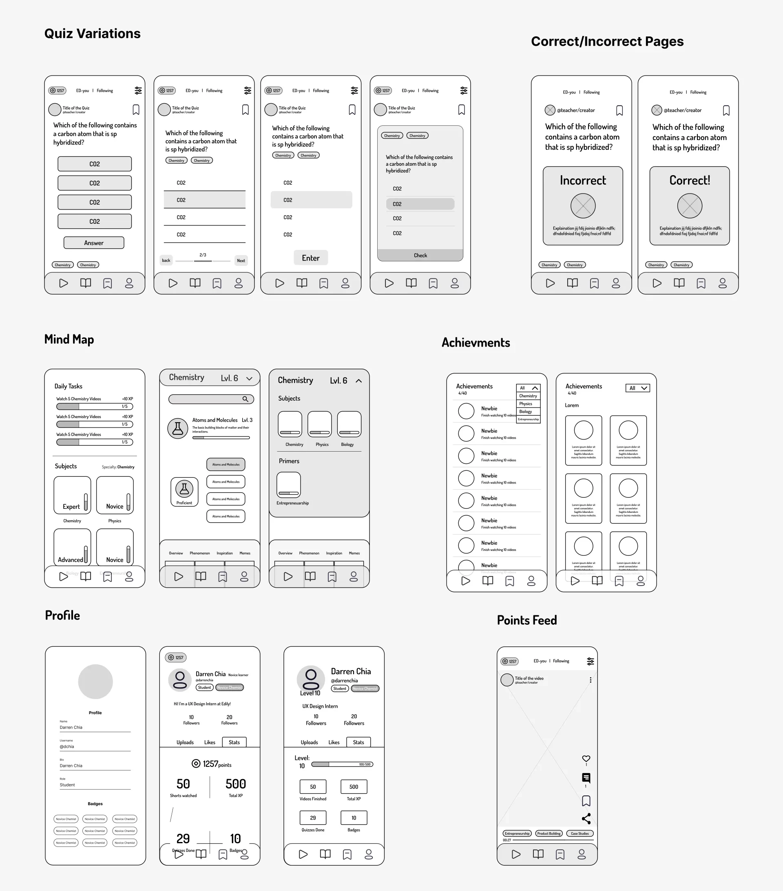
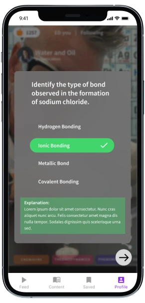
Quiz
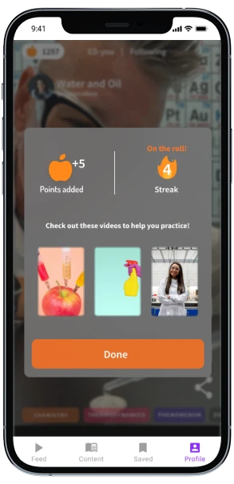
Quiz Results
Quiz
Practice Questions based on video content to keep users engaged with material.
Explanations
Whether right or wrong, explanation given for users to either learn from their mistakes or promote learning retention.
Incentive System
Points are good motivators as a sense of accomplishment and reward. Streaks good for consistent engagement.
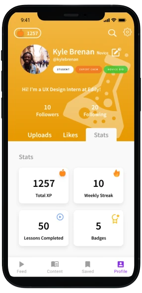
Profile: Stats
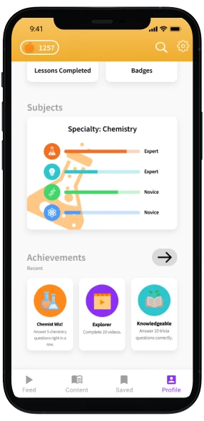
Profile: Specialties
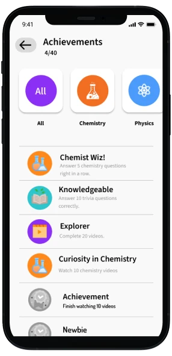
Profile: Achievements
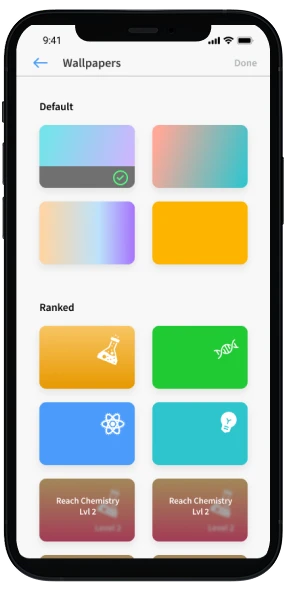
Banners
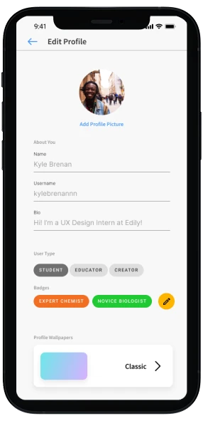
Settings
Badges
Interchangeable in profile and allows users to be proud of their accomplishments and specialtys.
Wallpapers
Unlockable wallpapers obtained by completing certain miles.